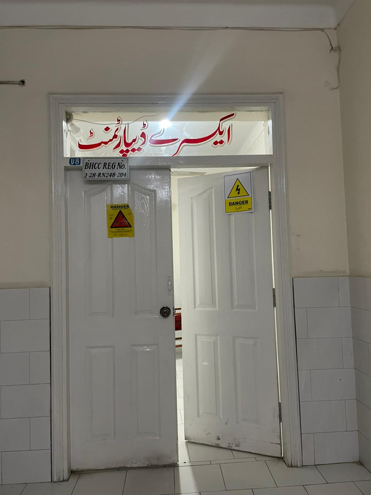
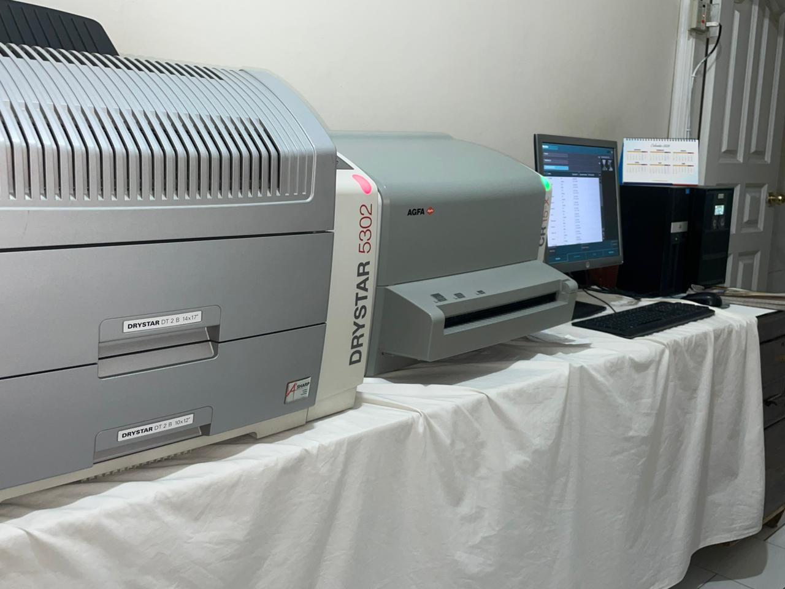
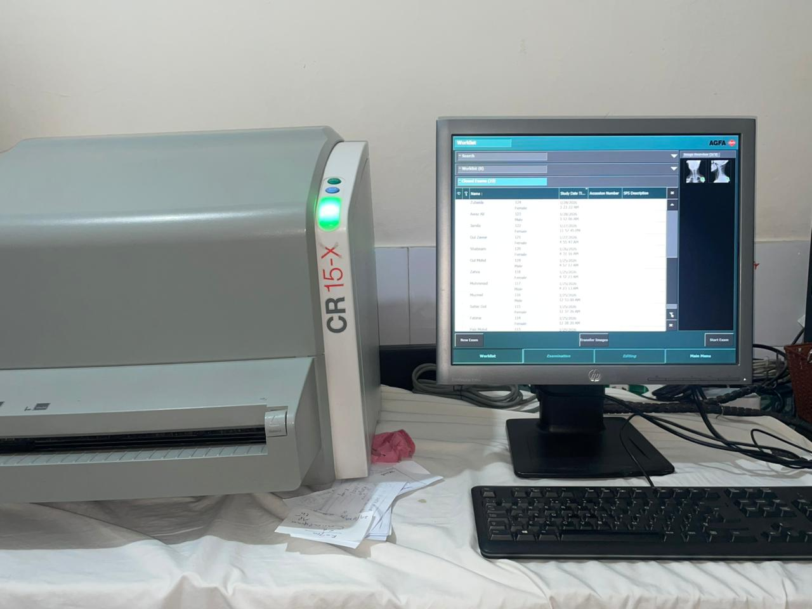
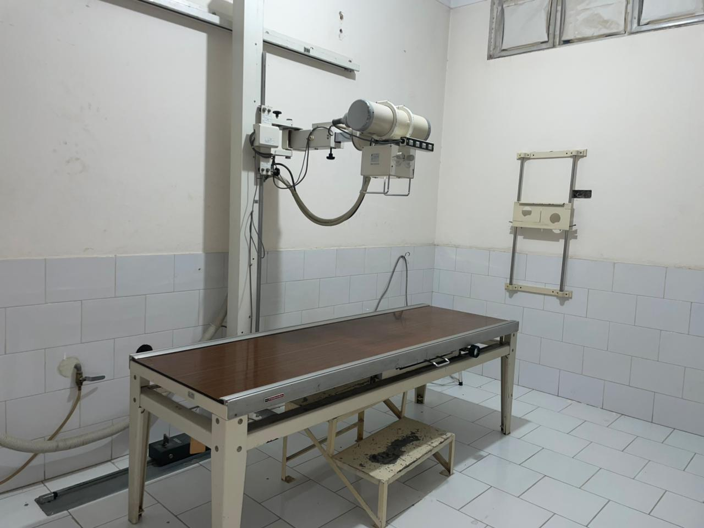

State-of-the-Art Imaging Technology
Our Radiology and Imaging Department is equipped with the latest diagnostic imaging technology to provide accurate and timely diagnosis. We offer a comprehensive range of imaging services performed by experienced radiologists and technicians.
From routine X-rays to advanced imaging modalities, we ensure high-quality images with minimal radiation exposure. Our digital imaging systems allow for quick image processing and easy sharing with your healthcare providers.
Imaging Services Available
- Digital X-Ray (All body parts)
Digital X-Ray Services
Our digital X-ray systems provide high-quality images with significantly reduced radiation exposure compared to traditional X-rays. Results are available within minutes, enabling quick diagnosis and treatment decisions.
⚡
Fast Results
Quick image processing with digital technology
🎯
High Accuracy
Crystal clear images for precise diagnosis
🛡️
Low Radiation
Minimal exposure with modern equipment
👨⚕️
Expert Radiologists
Experienced specialists reviewing all images
Our Imaging Center





Safety & Quality Standards
Patient safety is our top priority. We follow ALARA (As Low As Reasonably Achievable) principles to minimize radiation exposure while maintaining diagnostic image quality. Our equipment undergoes regular quality checks and calibration.
All our radiologic technologists are trained and certified professionals who ensure proper patient positioning and optimal image acquisition. We maintain strict protocols for patient identification and procedure verification.
Radiologist Consultation
Our experienced radiologists review all imaging studies and provide detailed written reports. Complex cases are discussed in multidisciplinary meetings to ensure comprehensive evaluation and optimal patient care.
Radiologists are available for consultation with referring physicians to discuss findings and recommend additional imaging when necessary. We maintain a collaborative approach to ensure the best diagnostic outcomes.
Preparing for Your Imaging Test
Most imaging procedures require minimal preparation. For specific studies like abdominal ultrasound or CT scans, you may need to fast for a few hours. Our staff will provide detailed instructions when you schedule your appointment.
Please inform us if you're pregnant, have allergies, or have metal implants, as these factors may affect certain imaging procedures. Bring any previous imaging studies for comparison if available.